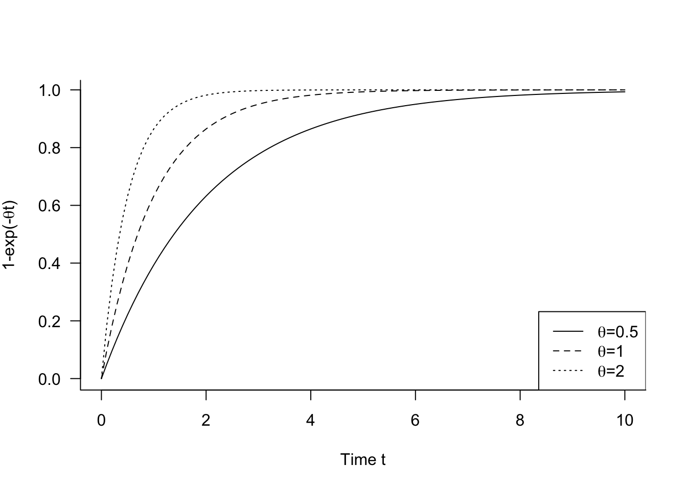

9 Nonlinear Regression
9.1 Introduction
A model is nonlinear if the derivative of the mean function with respect to any parameter is a function of one or more parameter. Curvilinear models such as the polynomial \[ \text{E}[Y] = \beta_0 + \beta_1x + \beta_2x^2 \] have a curved appearance when \(\text{E}[Y]\) is plotted against \(x\) but they are not nonlinear models by our definition. Many models we work with in data science and statistics are highly nonlinear. A logistic regression model is nonlinear in the parameters. Neural networks deliberately introduce nonlinearity through activation functions. Support vector machines use nonlinear kernel transformation to translate the classification problem into a space where linear decision boundaries can be applied. The list goes on and on.
The models considered in this section are nonlinear regression models in the narrow sense, the target variable is continuous and the model errors are additive. The models depend on input variables but there is not a 1–1 correspondence between inputs and parameters. A nonlinear regression model might have one input variable and four parameters. The general form of the nonlinear regression model is
\[\begin{align*} \textbf{Y}&= f(\textbf{x},\boldsymbol{\theta}) + \boldsymbol{\epsilon}\\ \boldsymbol{\epsilon}&\sim (\textbf{0}, \sigma^2\textbf{I}) \end{align*}\]
Except for the nonlinearity of the mean function, the assumptions from the classical linear model carry over: uncorrelated errors are additive with zero mean and constant variance.
Nonlinear regression models have advantages and disadvantages compared to their linear counterparts. Among the advantages are:
- the models are typically intrinsically interpretable, meaning that they can be interpreted based on the structure of the model alone. The parameters are meaningful quantities in terms of the subject matter domain.
- the models are based on physical, biological, economic, etc. theory.
- the models have fewer parameters compared to linear models.
Among the disadvantages are:
- the need for iterative fitting algorithms, there are no closed-form solutions for the parameter estimates
- the need for starting values and potential sensitivity to the choice of starting values
- inference is often approximate
Overall, the advantages outweigh the added complications of nonlinear model fitting. Schabenberger and Pierce (2001) give numerous examples why nonlinear regression models are preferable over linear ones.
Examples: 4:0 for Nonlinear Models
Parsimony. To achieve curvature with inflection in a polynomial model requires at least a model of third degree (\(x^3\)). Including the lower order terms, this model has 4 parameters. The nonlinear model \(\text{E}[Y] = 1-\exp\{-\beta x^\alpha\}\) achieves inflection with only two parameters.
Limiting Behavior. Many biological or physical processes have bounds and asymptotes. It is difficult to incorporate that behavior into linear models and simple to build nonlinear models that are concave, convex, sigmoidal, sinusoidal, and so on.
First Principles. Elementary assumptions about processes naturally lead to nonlinear models. For example, if \(y\) is the size of an organism at time \(t\), \(\alpha\) is the maximum size, and the rate of growth \(\partial y/\partial t\) is proportional to the remaining size \(\alpha-y\), then integrating the differential equation \(\partial y/\partial t = \beta(\alpha - y)\) leads to the nonlinear growth model \[ y(t) = \alpha + (\gamma - \alpha)\exp\{-\beta t\} \] where \(\gamma\) represents the initial size (at time \(t=0\)).
Interpretation. The parameters of nonlinear regression models are typically meaningful quantities that capture important aspects of the phenomenon under study. For the growth model in the previous equation \(\alpha\) is the asymptotically achieved final size, \(\gamma\) is the initial size at time \(t=0\), and \(\beta\) relates to the rate of change that determines how quickly the organism grows from \(\gamma\) to \(\alpha\).
The mineralization potential of soil can be modeled as \(\text{E}[Y] = \theta_0 (1-\exp\{-\theta_1 t\})\) where \(\theta_0\) is the maximum amount and \(0 \le 1-\exp\{-\theta_1 t\} \le 1\) is the proportional mineralization over time (for \(\theta_1 > 0\)) (Figure 9.1).
9.2 Estimation
Parameter estimation in nonlinear regression models is typically done by nonlinear least squares (Section 4.2.3), finding a numeric solution that minimizes the residual sum of squares criterion Equation 4.1. Many algorithms can be used for that purpose, Gauss-Newton, Newton-Raphson, Levenberg-Marquardt, or steepest descent algorithms are common.
The Gauss-Newton or Newton-Raphson algorithms are usually implemented with modifications. Gauss-Newton, for example, does not guarantee that the residual sum of squares decreases from one iteration to the next. It is thus combined with a step size (or learning rate) that moves the parameter estimates only a partial step into the direction of the update, making sure that \(\text{SSE}^{(t+1)} < \text{SSE}^{(t)}\). The step size can be determined by a line search algorithm or be fixed a priori.
As discussed in Section 4.2.3, finding the nonlinear LS solution can be expressed in terms of a series of linear models where the \(\textbf{X}\) matrix is made up of the derivatives of the model, evaluated at the current iterate. Nonlinear least squares suffers from poorly conditioned cross-product matrices because the columns of the matrix of derivative tend to be highly correlated. The derivatives often involve similar terms, creating near-linear dependency and multicollinearity. To stabilize parameter estimation, regularization techniques can be used. The Levenberg-Marquardt algorithm, for example, applies ridge regression to reduce the collinearity in the cross-product matrix formed from the derivatives.
The iterations stop when some convergence criteria is met. The hope is that the algorithm converges to a global minimum in the residual sum of square surface. Monitoring the change in the SSE between iterations is thus common, as is monitoring the change in the parameter estimates. These criteria measure different aspects: a small change in the parameter estimates implies that a small increment of the estimates an be tolerated; a small change in SSE implies that the objective function is flat in the neighborhood of the current solution. Convergence criteria should always be relative criteria, not measuring the absolute change in a criterion between iterations. Finally, convergence of the algorithm according to some measure of change between iterations does not necessarily mean that a global minimum has been reached. Iterations might stop because of lack of progress. For example, when the residual sum of square surface is flat in the neighborhood of the current parameter estimates, a SSE-based criterion might halt the iterations when the iterations should continue to crawl out of the flat spot.
9.3 Starting Values
A central issue in fitting nonlinear regression models is the choice of starting values. The algorithm kicks off with initial estimates \(\boldsymbol{\theta}^{(0)}\) and updates them (iterates) until the minimum of SSE is found. Starting values that are close to the solution greatly facilitate the estimation. Starting values far from the solution require more iterations and increase the odds to find a local minimum.
A number of techniques can be used to find starting values for the parameters and these are often used in combination. We illustrate with an example from modeling plant yield with the Mitscherlich equation and simulated data.
Example: Mitscherlich Equation for Plant Yield
The Mitscherlich equation is used in agricultural applications to model the yield of a crop as a function of some input \(x\), for example, a fertilizer. The systematic part of the equation is
\[ \lambda + (\xi-\lambda) \exp\left\{ -\kappa x\right\} \]
The parameters have straightforward interpretations:
- \(\xi\): the crop yield at \(x=0\)
- \(\lambda\): the upper yield asymptote as \(x\) increases
- \(\kappa\): is related to the rate of change, how quickly the yield increases from \(\xi\) to \(\lambda\)
The following code simulates 21 observations from a Mitscherlich model with \(\lambda = 40\), \(\xi = 40\), and \(\kappa = 0.01\).
set.seed(675)
x <- seq(from=0, to=400, by=20)
lambda <- 80
xi <- 40
kappa <- 0.01
M <- lambda + (xi-lambda) * exp(-kappa * x)
Yield <- M + rnorm(length(M),mean=0,sd=3)
mitsch <- data.frame(Yield,M,x)
plot(x,M, type="l",las=1,bty="l",ylab="Yield",ylim=c(40,80))
points(x,Yield)Graphical Inspection
A simple method for finding starting values is to glean values from a scatterplot of the data. For example, a four-parameter logistic response model \[ \text{E}[Y] = \delta + \frac{\alpha}{1+\exp\{\beta-\gamma x\}} \] has lower and upper asymptotes \(\delta\) and \(\alpha + \delta\), respectively. The inflection point is located at \(x= \beta/\gamma\) and the slope at the inflection point is \(\alpha\gamma/2\). Starting values for all four parameters can be found by guesstimating the asymptotes and slope on a scatterplot and solving.
Example: Mitscherlich Equation (Cont’d)
The Mitscherlich equation has a lower and upper bound of yield. The lower bound \(\xi\) occurs at \(x=0\). Based on the data points in Figure 9.2, starting values of \(\xi^{(0)} = 40\) and \(\lambda^{(0)} = 80\) are reasonable.
Eliminating Linear Parameters
Some models contain linear and nonlinear components. A simple transformation or holding a parameter fixed can then lead to an interim linear model for which values can be obtained by linear regression. The model \[ \text{E}[Y] = \theta_0 + \theta_1 x + \theta_2z^{\theta_3} \] is nonlinear in \(\theta_3\) but once \(\theta_3\) is fixed, this is a three-parameter linear model. Starting values for \([\theta_0, \theta_1, \theta_2]\) can be found by linear least squares after setting \(\theta_3\) to some reasonable value. \(z^{\theta_3}\) is then just another input variable in the linear model.
Example: Mitscherlich Equation (Cont’d)
Obtaining good starting values for \(\lambda\) and \(\xi\) can be done by visual inspection of the data. Finding a good starting value for \(\kappa\) is trickier. We can lean on the math to find a value using linear regression.
The formula for the Mitscherlich equation is \[ \text{E}[Y] = \lambda + (\xi-\lambda) \exp\left\{ -\kappa x\right\} \]
Moving terms around and taking logarithms gives \[ \log(\lambda - \text{E}[Y]) = \log(\lambda-\xi) -\kappa x \]
We can approximate \(\kappa\) as the negative slope of a linear regression with target \(\log(\lambda^{(0)}-Y)\) where \(\lambda^{(0)}\) is the initial guess for \(\lambda\). We can then also get a starting value for \(\xi^{(0)}\) by transforming the intercept of the regression.
lm.fit <- lm(log(80-Yield) ~ x, data=mitsch)
lm.fit
Call:
lm(formula = log(80 - Yield) ~ x, data = mitsch)
Coefficients:
(Intercept) x
3.754 -0.010 From this linear regression we get starting values
- \(\kappa^{(0)}\) = 0.01
- \(\xi^{(0)}\) = 80 - exp(3.7544) = 37.2898
Grid Search
A grid search evaluates the residual sum of squares at a set of starting values. Each parameter takes on a set of starting values and the grid is the cartesian product of the parameter sets. For example, if the set of starting values for \(\theta_1\) is \(S_1 = \{1, 1.5, 2\}\), the set for \(\theta_2\) is \(S_2 = \{0.1, 0.2\}\) and the set for \(\theta_3\) is \(S_3 = \{10, 100\}\), their cartesian product–the grid of the starting value sets–has cardinality \(|S_1| \times |S_2| \times |S_3| = 3 \times 2 \times 2 = 12\).
The grid search evaluates the residual sum of squares at each point on the grid and starts the iterations from the set of starting values that produce the smallest SSE.
Note
The grid search does not fit the model to each set of parameters on the grid and chooses the one that leads to the lowest converged SSE. The model is fit to only one vector of starting values, the one that produces the smallest SSE when the model is evaluated at the starting values.
The number of parameter combinations for which the initial SSE needs to be computed can grow very quickly when the number of parameters in the grid is large or when the grid is very granular. This can take considerable conmputing resources, although the grid evaluation can be easily executed in parallel.
Example: Mitscherlich Equation (Cont’d)
You can fit nonlinear regression models by least squares in R with the nls function in the built-in stats package. Unfortunately, nls accepts only one vector of starting values and does not perform a grid search. The nls2 function in the package by the same name allows a grid of starting values. You combine the functions as follows:
- Set up a grid of starting values and call
nls2withalgorithm="grid-search". This will return as the coefficients of a nonlinear regression object the best set of starting values. - Call
nlswith the best set returned fromnls2as the starting values or callnls2again, passing the best set from the grid search as the starting values.
The following code creates a \(5 \times 6 \times 4\) grid of 120 sets of starting values for the three parameters of the Mitscherlich equation. The equation is defined through a model formula that is passed to nls2 as the first argument.
library(nls2)
gr <- expand.grid(lambda=seq(10,100,20),
xi =seq(0,50,10),
kappa =seq(0.001,0.01,0.0025))
mit_eq <- Yield ~ lambda + (xi-lambda)*exp(-kappa*x)
best_start <- nls2(formula =mit_eq,
data =mitsch,
start =gr,
algorithm="grid-search")
best_startNonlinear regression model
model: Yield ~ lambda + (xi - lambda) * exp(-kappa * x)
data: mitsch
lambda xi kappa
9e+01 4e+01 6e-03
residual sum-of-squares: 334.6
Number of iterations to convergence: 120
Achieved convergence tolerance: NAAmong the sets of starting values examined, \(\lambda_0\) =90, \(\xi_0\) = 40, \(\kappa_0\) =0.006 produce the smallest SSE= 334.645
Note that the output from nls2 suggests that an actual optimization with 120 iterations was performed and that the algorithm converged. 120 is the size of the grid of starting values passed to nls2. The reported error sum of squares is obtained by evaluating the Mitscherlich equation at the starting values, it is not the SSE at a converged solution. The following code verifies this:
lambda_0 <- coef(best_start)[1]
xi_0 <- coef(best_start)[2]
kappa_0 <- coef(best_start)[3]
fit_0 <- lambda_0 + (xi_0-lambda_0)*exp(-kappa_0*mitsch$x)
sum((mitsch$Yield - fit_0)^2)[1] 334.6452We now need to perform the actual nonlinear regression estimation using the best starting values determined by nls2 as starting values for nls().
mitsch_fit <- nls(mit_eq, start=coef(best_start), data=mitsch)
mitsch_fitNonlinear regression model
model: Yield ~ lambda + (xi - lambda) * exp(-kappa * x)
data: mitsch
lambda xi kappa
80.02190 39.93216 0.00906
residual sum-of-squares: 102.5
Number of iterations to convergence: 3
Achieved convergence tolerance: 5.945e-06The algorithm coverges very quickly, after only three iterations. The converged parameter estimates are \(\widehat{\lambda} =\) 80.0219, \(\widehat{\xi} =\) 39.9322, \(\widehat{\kappa} =\) 0.0091.
Alternatively, you can call the nls2() function again and pass the previous return object, using the default fitting algorithm:
nls2(mit_eq, best_start, data=mitsch)Nonlinear regression model
model: Yield ~ lambda + (xi - lambda) * exp(-kappa * x)
data: mitsch
lambda xi kappa
80.02190 39.93216 0.00906
residual sum-of-squares: 102.5
Number of iterations to convergence: 3
Achieved convergence tolerance: 5.945e-06You can also let nls2() generate a grid for you by providing a two-row data frame that defines the bounding box for the starting values and control the density of the grid with the maxiter parameter of nls.control().
parm_box <- data.frame(lambda=c(10,100),
xi =c(0,50),
kappa =c(0.001,0.01))
mit_eq <- Yield ~ lambda + (xi-lambda)*exp(-kappa*x)
best_start <- nls2(formula =mit_eq,
data =mitsch,
control =nls.control(maxiter=100),
start =parm_box,
algorithm="grid-search")
best_startNonlinear regression model
model: Yield ~ lambda + (xi - lambda) * exp(-kappa * x)
data: mitsch
lambda xi kappa
77.50 37.50 0.01
residual sum-of-squares: 160.4
Number of iterations to convergence: 125
Achieved convergence tolerance: NAnls2(mit_eq, best_start, data=mitsch)Nonlinear regression model
model: Yield ~ lambda + (xi - lambda) * exp(-kappa * x)
data: mitsch
lambda xi kappa
80.02192 39.93217 0.00906
residual sum-of-squares: 102.5
Number of iterations to convergence: 3
Achieved convergence tolerance: 3.783e-06With the best starting values from this evaluation, the final fit converges to almost the same parameter estimates as with the best starting values from the earlier grid.
9.4 Reparameterization
Reparameterization of a model is the re-expression of a model in terms of a different set of parameters. The overall fit of the model remains the same, but the meaning of the parameters changes. Reparameterization is an important and underappreciated aspect of nonlinear modeling. Expressing the model in terms of different parameters has many uses:
- facilitating finding of starting values
- reducing the multicollinearity between the columns of the derivative matrix
- imposing constraints on the parameter estimates
Imposing a Positivity Constraint
Example: Theophylline Concentration
Boeckmann, Sheiner, and Beal (1992) report serum concentration profiles for the anti-asthma drug theophylline, administered orally to 12 subjects. The serum concentrations were measured at ten time points over a 25-hour period. The subjects fall into two groups, depending on one of two doses of theophylline administered. The data have a longitudinal structure and have been analyzed using nonlinear mixed models by Davidian and Giltinan (1995), Pinheiro and Bates (1995), and others.
We ignore the longitudinal aspect of the data here and fit a nonlinear regression model to data from all subjects–we will return to these data with a longitudinal analysis in Chapter 28.
library("duckdb")
con <- dbConnect(duckdb(),dbdir = "ads.ddb",read_only=TRUE)
theoph <- dbGetQuery(con, "SELECT * FROM theoph_all")
dbDisconnect(con)
head(theoph,20) Subject Wt Dose Time conc
1 1 79.6 4.02 0.00 0.74
2 1 79.6 4.02 0.25 2.84
3 1 79.6 4.02 0.57 6.57
4 1 79.6 4.02 1.12 10.50
5 1 79.6 4.02 2.02 9.66
6 1 79.6 4.02 3.82 8.58
7 1 79.6 4.02 5.10 8.36
8 1 79.6 4.02 7.03 7.47
9 1 79.6 4.02 9.05 6.89
10 1 79.6 4.02 12.12 5.94
11 1 79.6 4.02 24.37 3.28
12 2 72.4 4.40 0.00 0.00
13 2 72.4 4.40 0.27 1.72
14 2 72.4 4.40 0.52 7.91
15 2 72.4 4.40 1.00 8.31
16 2 72.4 4.40 1.92 8.33
17 2 72.4 4.40 3.50 6.85
18 2 72.4 4.40 5.02 6.08
19 2 72.4 4.40 7.03 5.40
20 2 72.4 4.40 9.00 4.55Like Davidian and Giltinan (1995), we eliminate the data points at time \(t=0\) from the analysis of a one-compartmental model with first-order absorption and elimination. This model expresses \(C(t)\), the serum concentration at time \(t\) following administration of dose \(D\), as \[ C(t) = \frac{D k_a}{V(k_a - Cl/V)}\left\{\exp\left(-\frac{Cl}{V}t\right) - \exp(-k_a t) \right\} \tag{9.1}\]
The parameters to be estimated in Equation 9.1 are \(\{k_a,V,Cl\}\), the rate of absorption \(k_a\), the volume of distribution \(V\), and the clearance \(Cl\).
We first fit the model in this parameterization
comp_model <- conc ~ (Dose * ka)/(V*(ka-Cl/V)) * (exp(-Cl/V*Time) - exp(-ka*Time))
fit1 <- nls(formula=comp_model,
start =list(Cl=0.01, ka=1, V=0.2),
data =theoph,
subset =(theoph$Time > 0))
summary(fit1)
Formula: conc ~ (Dose * ka)/(V * (ka - Cl/V)) * (exp(-Cl/V * Time) - exp(-ka *
Time))
Parameters:
Estimate Std. Error t value Pr(>|t|)
Cl 0.038842 0.003031 12.816 < 2e-16 ***
ka 1.490674 0.183765 8.112 5.56e-13 ***
V 0.484798 0.024701 19.626 < 2e-16 ***
---
Signif. codes: 0 '***' 0.001 '**' 0.01 '*' 0.05 '.' 0.1 ' ' 1
Residual standard error: 1.53 on 117 degrees of freedom
Number of iterations to convergence: 6
Achieved convergence tolerance: 1.2e-06The fit converges in 6 iterations to estimates \(\widehat{Cl}\) = 0.0388, \(\widehat{k}_a\) = 1.4907, and \(\widehat{V}\) = 0.4848.
Thankfully, the estimates for all parameters are positive; a negative absorption, negative clearance, or negative volume would be difficult to explain. The positivity constraint can be built into the model through reparameterization. Instead of estimating \(k_a\), \(Cl\), and \(V\), the model can be written in terms of \(\beta_1 = \log Cl\), \(\beta_2 = \log k_a\), and \(\beta_3 = \log V\).
comp_model2 <- conc ~ (Dose * exp(beta2)) / (exp(beta3)*(exp(beta2)-exp(beta1)/exp(beta3))) *
(exp(-exp(beta1)/exp(beta3)*Time) - exp(-exp(beta2)*Time))
fit2 <- nls(formula=comp_model2,
start =list(beta1=-3, beta2=0.2, beta3=-0.8),
data =theoph,
subset =(theoph$Time > 0))
summary(fit2)
Formula: conc ~ (Dose * exp(beta2))/(exp(beta3) * (exp(beta2) - exp(beta1)/exp(beta3))) *
(exp(-exp(beta1)/exp(beta3) * Time) - exp(-exp(beta2) * Time))
Parameters:
Estimate Std. Error t value Pr(>|t|)
beta1 -3.24826 0.07803 -41.630 < 2e-16 ***
beta2 0.39923 0.12328 3.238 0.00156 **
beta3 -0.72402 0.05095 -14.210 < 2e-16 ***
---
Signif. codes: 0 '***' 0.001 '**' 0.01 '*' 0.05 '.' 0.1 ' ' 1
Residual standard error: 1.53 on 117 degrees of freedom
Number of iterations to convergence: 5
Achieved convergence tolerance: 2.822e-06The \(\beta\) estimates now can range on the real line, \(-\infty < \beta_j < \infty\), the exponentiated values will be positive. The reparameterized model converges to the same solution, expressed in terms of different parameters. The equivalence can be verified by exponentiating the estimates of fit2:
exp(coef(fit2)) beta1 beta2 beta3
0.03884159 1.49067652 0.48479808 coef(fit1) Cl ka V
0.03884161 1.49067360 0.48479779 For parameters that represent proportions a logit transform is useful. If \(0 \le \alpha \le 1\), we can instead fit the unconstrained parameter \(\theta = \log (\alpha/(1-\alpha)\). This should look familiar, it is the transformation that maps the mean in logistic regression to the linear predictor.
Expected Value Parameterization
This technique is helpful to find starting values for parameters and has a positive side-effect in reducing a curvature component of the nonlinear model. A model has two curvatures, called the intrinsic and the parameter-effects curvatures. Intrinsic curvature measures how much the model bends if the parameters are changed when the inputs are held fixed. (This is not the same as measuring how much the mean function changes with a change in the inputs.)
Parameterization does not affect the intrinsic curvature, but it affects the second component, the parameter-effects curvature. This component measures the quality of the linear approximation in a neighborhood of the parameter values.
Models with large curvature have undesirable statistical properties, they converge more slowly, the parameter estimates are biased with unreliable standard errors and the asymptotic inference assuming that the estimates are Gaussian distributed is questionable.
The expected value parameterization introduced by Ratkowsky (1983, 1990) reduces the parameter-effects curvature which he argues is the greater of the two curvature components.
Suppose the model has a single input variable, \(x\). By visual inspection based on the scatterplot of \(Y\) versus \(x\) you can obtain a guesstimate of \(\text{E}[Y|x^*]\) for a particular value \(x^*\) of the input. Call this estimate \(\mu^*\) and set it equal to \(f(x^*,\boldsymbol{\theta})\). You can now replace one of the parameters with \(\mu^*\) for which you already have a starting value. An example from Schabenberger and Pierce (2001, 209) will make this approach more tangible.
Example: Michaelis-Menten Model
The Michaelis-Menten model is popular in biochemical applications to describe chemical reactions in enzyme systems: \[ \text{E}[Y|x] = \frac{Vx}{x+K} \tag{9.2}\] \(Y\) is the velocity of the chemical reaction, \(x\) is the substrate concentration. The parameters \(V\) and \(K\) measure the theoretical maximum velocity (\(V\)) and the substrate concentration at with velocity \(V/2\) is attained (\(K\)).
Choose any concentration \(x^*\) and estimate the velocity \(\mu^*\) from a scatterplot of the data. Under the Michaelis-Menten model we now have \[ \mu^* = \frac{Vx^*}{x^*+K} \] Solve for \(V\), the parameter most difficult to specify: \[ V = \mu^* \, \frac{x^*+K}{x^*} \] You can now substitute this expression for \(V\) in Equation 9.2, leading to the reparameterized model \[ \text{E}[Y|x] = \mu^* \frac{x+xK/x^*}{x^*+xK/x^*} \] Instead of the parameters \(\boldsymbol{\theta}= [V,K]\) you are now estimating \(\boldsymbol{\theta}^* = [\mu^*,K]\). This model has the same intrinsic curvature as Equation 9.2 but has lower parameter-effects curvature and the starting value for \(\mu^*\) is easily found by graphical inspection.
Choosing a second pair of values \((x^{**},\mu^{**})\), you can also replace \(K\) with an expected-value parameter.
Defining Relationships
The expected-value reparameterization does not lead to a more readable form of the model, we choose a value \(x^*\) and replace one of the parameters with \(\mu^*\). Schabenberger and Pierce (2001) describe the reverse process, choosing a value \(\mu^*\) and replacing a model parameter with the input value \(x^*\) that corresponds to it. This is termed reparameterization through defining relationships and is useful when the goal is to estimate \(x^*\), an inverse prediction problem.
This occurs frequently in dose-response studies where one is interested in the amount of input one has to provide to achieve a particular output. For example, the \(LD_{50}\) represents the lethal dosage at which 50% of the subjects die, the \(GR_{25}\) represents the input that increases or decreases growth by 25%. Turning these quantities into model parameters has the added benefit that we can obtain estimates and standard errors, compute confidence intervals and test hypotheses.
As with expected-value parameters, the defining relationship is \[ \text{E}[Y|x^*] = f(x^*,\boldsymbol{\theta}) \] but now we are solving for \(x^*\) in the quest to replace a parameter and not for \(\text{E}[Y|x^*]\).
Example: Log-logistic Growth Model
Schabenberger and Pierce (2001, 234–36) apply these ideas to a log-logistic model for growth: \[ \text{E}[Y|x] = \delta + \frac{\alpha-\delta}{1+\psi\exp\{\beta\log(x)\}} \] The asymptotes of the growth model are \(\alpha\) and \(\delta\) and growth transitions in sigmoidal shape between those. Define \(\lambda_K\) as the the value at which \(K\%\) of the difference between lower and upper asymptote is reached \[ \text{E}[Y|\lambda_K] = \delta + \frac{100-K}{100}(\alpha-\delta) \] Now consider the defining relationship \[ \delta + \frac{100-K}{100}(\alpha-\delta) = \delta + \frac{\alpha-\delta}{1+\psi\exp\{\beta\log(\lambda_K)\}} \] Schabenberger et al. (1999) solve for \(\psi\), leading to the reparameterized log-logistic model \[ \text{E}[Y|x] = \delta + \frac{\alpha-\delta}{1+\frac{K}{100-K}\exp\{\beta\log(x/\lambda_K)\}} \] Figure 9.3 shows simulated data from a log-logistic model.
We can fit the model in the \(\lambda_K\) parameterization as follows, for example, with \(K=50\):
K <- 50
loglog <- y ~ delta + (alpha-delta)/(1+(K/(100-K)*exp(beta*log(x/lambda))))
fit <- nls(formula=loglog, data=df,
start=list(alpha=100, delta=3, lambda=0.2, beta=1)
)
summary(fit)
Formula: y ~ delta + (alpha - delta)/(1 + (K/(100 - K) * exp(beta * log(x/lambda))))
Parameters:
Estimate Std. Error t value Pr(>|t|)
alpha 100.64422 6.48491 15.520 < 2e-16 ***
delta 13.52256 4.50904 2.999 0.00404 **
lambda 0.19033 0.01441 13.205 < 2e-16 ***
beta 2.78986 0.61379 4.545 2.98e-05 ***
---
Signif. codes: 0 '***' 0.001 '**' 0.01 '*' 0.05 '.' 0.1 ' ' 1
Residual standard error: 10.26 on 56 degrees of freedom
Number of iterations to convergence: 12
Achieved convergence tolerance: 5.33e-06For \(K=50\), \(\lambda\) is the point on the \(x\)-axis where the difference between upper and lower asymptote is reduced by half, \(\widehat{\lambda}=\) 0.1903. We can validate that easily:
predict(fit,newdata=data.frame(x=coef(fit)[3]))[1] 57.08339as.numeric(coef(fit)[1] - 0.5*(coef(fit)[1] - coef(fit)[2]))[1] 57.08339Figure 9.4 displays observed and fitted values along with the \(\widehat{\lambda}_{50}\) value.
The model is easily changed to estimate a different point of reduction, for example \(\lambda_{75}\):
K <- 75
loglog <- y ~ delta + (alpha-delta)/(1+(K/(100-K)*exp(beta*log(x/lambda))))
fit2 <- nls(formula=loglog, data=df,
start=list(alpha=100, delta=3, lambda=0.2, beta=1)
)
summary(fit2)
Formula: y ~ delta + (alpha - delta)/(1 + (K/(100 - K) * exp(beta * log(x/lambda))))
Parameters:
Estimate Std. Error t value Pr(>|t|)
alpha 100.64457 6.48500 15.520 < 2e-16 ***
delta 13.52231 4.50915 2.999 0.00404 **
lambda 0.28218 0.03042 9.275 6.50e-13 ***
beta 2.78981 0.61378 4.545 2.98e-05 ***
---
Signif. codes: 0 '***' 0.001 '**' 0.01 '*' 0.05 '.' 0.1 ' ' 1
Residual standard error: 10.26 on 56 degrees of freedom
Number of iterations to convergence: 11
Achieved convergence tolerance: 7.44e-06Notice that the parameter estimates of \(\alpha\), \(\delta\), and \(\beta\) do not change, and the overall fit is the same, as can be seen from the residual standard error. The estimate of the point where the difference between the asymptotes is reduced by 75% is \(\widehat{\lambda}_{75}=\) 0.2822.
predict(fit2,newdata=data.frame(x=coef(fit2)[3]))[1] 35.30288as.numeric(coef(fit2)[1] - 0.75*(coef(fit2)[1] - coef(fit2)[2]))[1] 35.30288